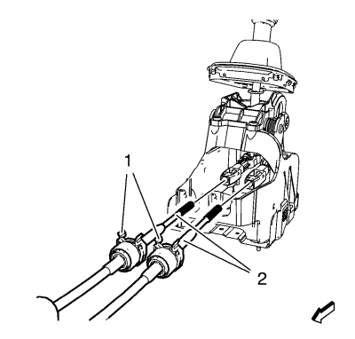
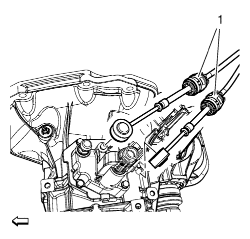
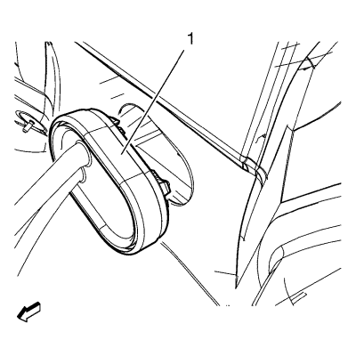

Desmonte las sujeciones (1) de ajuste de los cables de la palanca de cambio y de la palanca selectora.

Desmonte el retén (1) de los cables de la palanca de cambio y de la palanca selectora del control del cambio.
Separe los cables (2) de la palanca de cambio y de la palanca selectora de los aparatos de ajuste del control del cambio.

Desemborne los cables de la palanca de cambio y de la palanca selectora (1) de la palanca de control del cambio y del soporte de los cables de la palanca selectora y la palanca de cambio.

Desmonte el pasamuros (1) de los cables de la palanca de cambio y la palanca selectora de la mampara.
Desmonte los cables de la palanca de cambio y la palanca selectora.
Monte los cables de la palanca de cambio y la palanca selectora.
Monte el pasamuros (1) de los cables de la palanca de cambio y la palanca selectora en la mampara.
Emborne los cables de la palanca de cambio y de la palanca selectora (1) a la palanca de control del cambio y al soporte de los cables de la palanca selectora y la palanca de cambio.
Conecte los cables (2) de la palanca de cambio y de la palanca selectora a los aparatos de ajuste del control del cambio.
Monte el retén (1) de los cables de la palanca de cambio y de la palanca selectora al control del cambio.